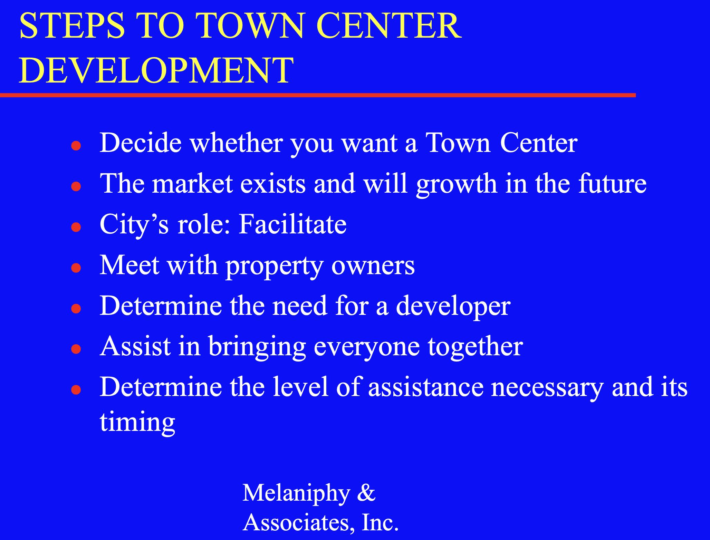
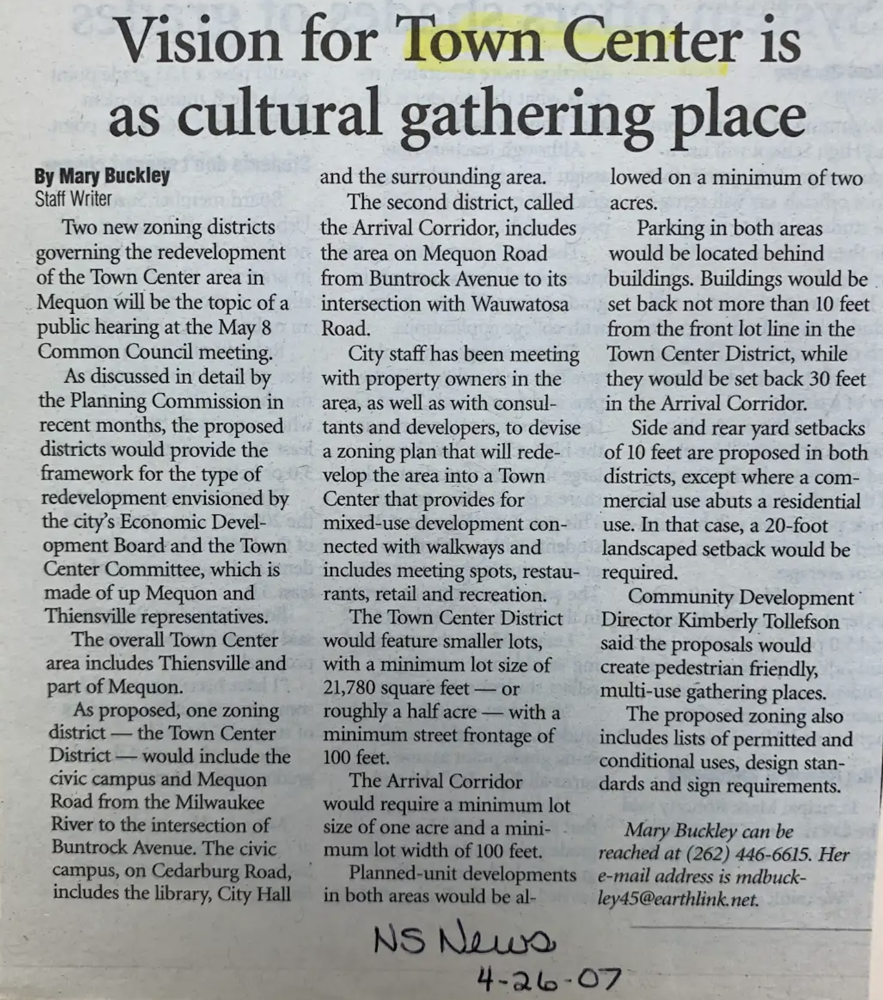
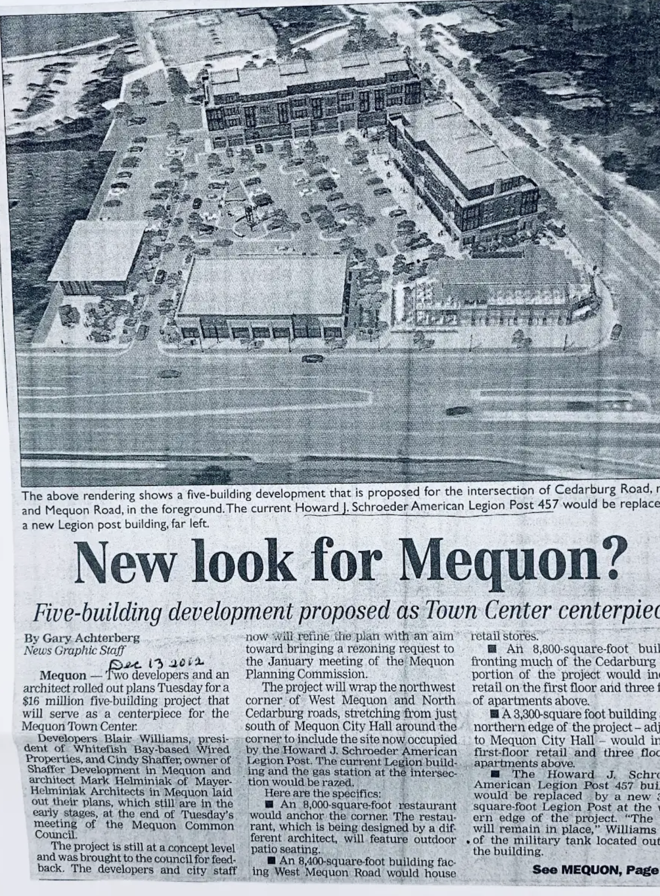
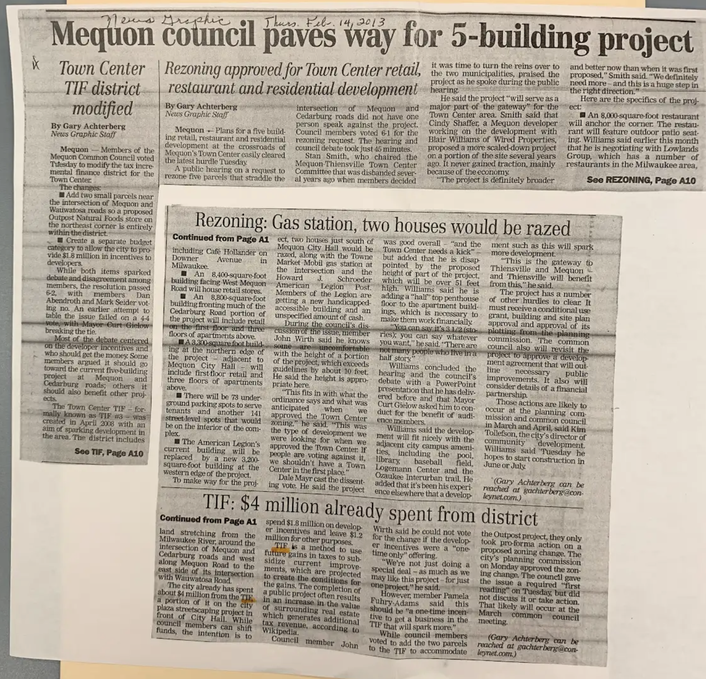
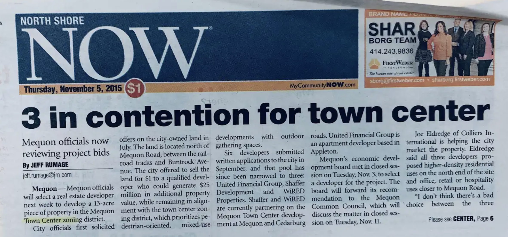

In 2006, after five years of planning the city center idea, there was a master plan, design guidelines, and a retail study according to Town Center Committee Chair Dan Minahan.

A March 2006 retail study by Melaniphy & Associates proposed a three-phase approach to adding retail space on Cedarburg Road, concluding in 2015. The study asserted that the market will support the development. It proposed a “TIF, a Special Service Area, a Taxing District, or some other public/private vehicle will be needed.”
In April 2007, the Town Center Committee and Mequon’s Economic Development Board refined the concepts for the town center to include walkways, meeting spots, restaurants, and recreation in addition to retail space.
Developers and an architect presented plans for the town center to the Mequon Common Council in December 2012. The proposed development would have five buildings for retail, offices, apartments, and an American Legion post. Although Town Center and other TID 3 developments included upscale apartments, since they displaced only a handful of homes, they can't be called gentrifying.
The Mequon Common Council made two changes to the TIF district during a meeting in February 2013. They added two parcels for an Outpost Co-op at Mequon and Wauwatosa Roads and they created a $1.8 million budget for developer incentives. The council also rezoned five parcels. This was a significant hurdle toward the town center development.
Seeking Developers
Mequon sought developers for the district. The first phase focused on the northwest corner of the intersection of Cedarburg and Mequon Roads. Six developers submitted proposals in September, 2015. By November, three remained in the competition. A week later, the Common Council selected WiRED.
WiRED’s proposal described a mixed-use development hugging the two roads with parking in its center. It called for five buildings: an upscale restaurant at the corner, retail and office space along Mequon Road, retail and rental housing along Cedarburg Road and at the north end of the development, a new home for an American Legion post.
In contrast to the sprawling developments along Port Washington Road, WiRED’s plan was contained in a way that felt very different.